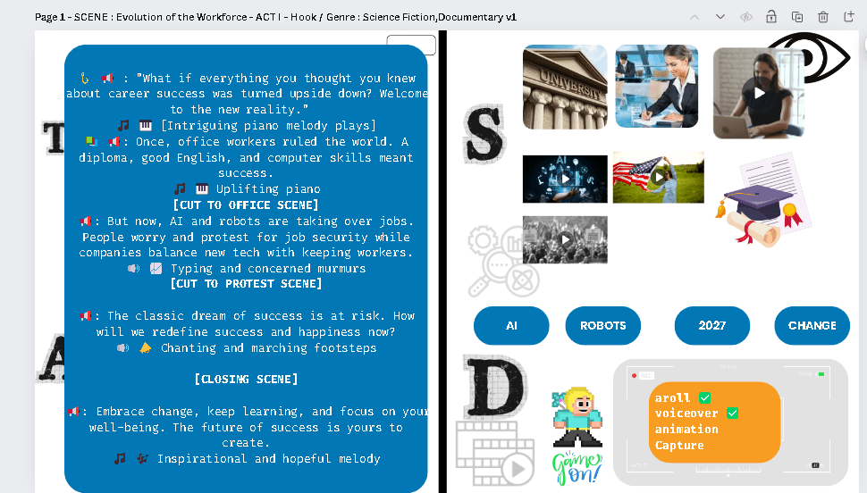
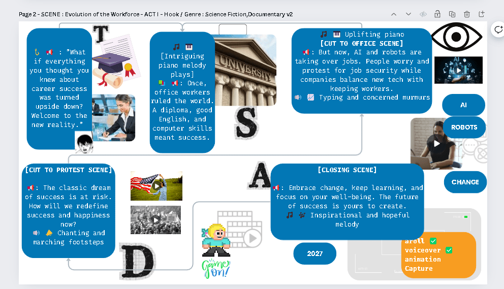

Screenwriting versions
Initial

Version 2

Evolution of the Workforce: Enhancing Creativity in Screenwriting
Introduction
Screenwriting is a complex art form that requires a delicate balance between dialogue, narrative flow, and visual storytelling. In our journey to explore the evolution of the workforce, we've experimented with different versions of a screenplay to better capture the essence of change and adaptation in the workplace. Today, we'll delve into two versions of our script, highlighting how version 2 pushes the boundaries of creativity while maintaining the essential elements of storytelling.
Version 1: The Traditional Approach
In our initial draft, we adhered to a more conventional structure:Seperated as dialog and visual like tv production
-
Introduction: A narrator sets the scene, discussing the upheaval in career success paradigms due to advancements in technology.
-
Office Scene: Depicts the impact of AI and robotics on job security.
-
Protest Scene: Illustrates societal reactions and concerns.
-
Closing Scene: Emphasizes the importance of embracing change and continuous learning.
While this version effectively communicates the narrative, it follows a linear and somewhat predictable format. The dialogue and scenes are straightforward, which, although clear, may not fully engage the audience's imagination.
Version 2: Embracing Creativity
In version 2, we've adopted a more creative approach, inspired by the concept of a mind map. This version visually links dialogues and scenes in a non-linear format, enhancing engagement and offering a more dynamic storytelling experience.
Key Features of Version 2:
-
Mind Map Structure:
-
Each scene and dialogue is visually connected, creating a web of interconnected ideas.
-
This layout allows the audience to see the relationships between different elements of the story, fostering a deeper understanding.
-
Enhanced Visuals and Imagery:
-
The use of varied images and icons adds a layer of visual storytelling that complements the dialogue.
-
Icons like the eye, robot, and graduation cap symbolize key themes, making the narrative more visually appealing and memorable.
-
Interactive Elements:
-
The format invites viewers to explore each dialogue and scene as standalone segments.
-
This flexibility allows for each part to be acted and recorded individually, providing opportunities for more creative expression in performance and production.
-
TSDA Elements:
-
The foundational elements of Tell, Show, Do, Apply (TSDA) remain intact but are woven into the narrative more fluidly.
-
This approach ensures that while the story is creatively presented, it still maintains a coherent and educational structure.
Benefits of the Creative Approach
Engagement:
The non-linear, mind map style captivates the audience's attention more effectively than a traditional format. Viewers are encouraged to think critically about the connections between scenes and ideas.
Flexibility:
Each dialogue and scene can be developed independently, allowing for more detailed and nuanced performances. This flexibility can lead to higher quality production and more impactful storytelling.
Memorability:
The use of symbols, imagery, and interconnected ideas makes the narrative more memorable. Audiences are more likely to recall the key messages and themes due to the visually rich and dynamic presentation.
Conclusion
The evolution from version 1 to version 2 of our screenplay illustrates the potential for creativity in screenwriting. By adopting a mind map approach, we've enhanced engagement, flexibility, and memorability while maintaining the essential elements of storytelling. This innovative format not only brings the narrative to life but also invites audiences to explore the themes of workforce evolution in a more interactive and thought-provoking manner.
As we continue to explore new storytelling techniques, it's clear that embracing creativity can lead to richer, more impactful narratives. Whether you're a screenwriter, director, or actor, there's always room to push the boundaries and discover new ways to connect with your audience.
Imported from rifaterdemsahin.com · 2024